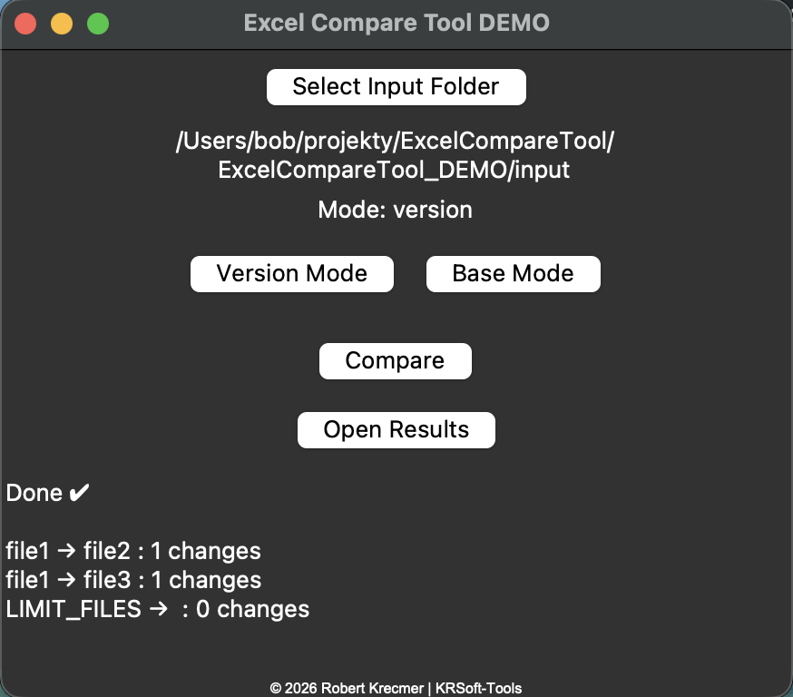
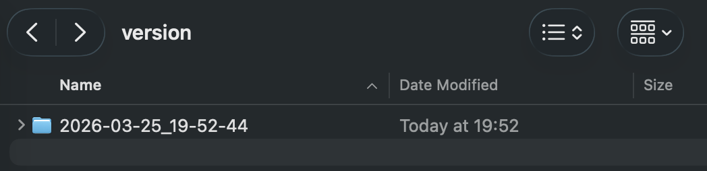
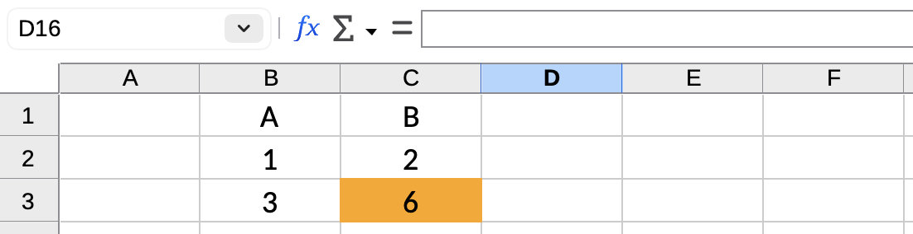

Compare Excel Files and Highlight Differences
Find changed cells without checking spreadsheets manually.
Excel Compare Tool creates result files and highlights changed cells automatically, helping you review spreadsheet differences faster and more clearly.
Download Demo
Try Excel Compare Tool on your own Excel files.
MacOS demo Windows demoNo installation. No data leaves your device.
What This Tool Does
Excel Compare Tool helps you compare Excel files locally and review differences faster. Instead of checking spreadsheets cell by cell, it creates result files and highlights changed cells automatically.
Why Use It Instead of Manual Checking?
Manually comparing spreadsheets is slow, frustrating, and easy to miss important changes. This tool helps you review updated Excel files faster and see exactly where differences occurred.
1. Select your input folder

2. Run the comparison
3. Open the generated result folder

4. Review the comparison files

5. See changed cells instantly

Best For
- Checking updated spreadsheet versions
- Reviewing changes before sending files
- Finding differences without manual scanning
- Simple local Excel comparison workflows
What It Does Not Try to Be
- No cloud platform
- No Excel add-in
- No complex setup
- No bloated software suite
Tried the software?
If you tested the demo and have feedback, I’d genuinely like to hear it.
And if there’s another Excel-related task you wish a simple local tool could solve, feel free to mention that too.
You can reach me at:
© 2026 Robert Krecmer – Excel Compare Tool